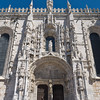
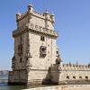
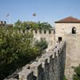
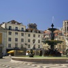
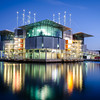

Must-See Sights in Lisbon
Head to Lisbon for a stunning mix of ancient sites and modern wonders: from a 16th century Moorish castle to the largest aquarium in Europe.
| 5 Places to go in Lisbon | |
|---|---|
| Jerónimos Monastery |  |
| Belém Tower |  |
| São Jorge Castle |  |
| Lisbon Baixa |  |
| Lisbon Oceanarium |  |